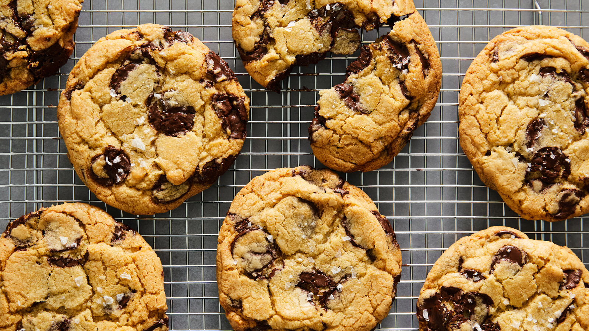

Home
Chocolate Chip Cookies

Description
These homemade chocolate chip cookies are soft on the inside, slightly crispy on the edges,
and packed with rich chocolate chips. They are easy to make and perfect for sharing with
family and friends.
Made with simple pantry ingredients, these classic cookies are delicious served warm with a
glass of milk or enjoyed as a sweet snack any time of the day.
Ingredients
- 2¼ cups all-purpose flour
- 1 teaspoon baking soda
- ½ teaspoon salt
- 1 cup unsalted butter, softened
- ¾ cup granulated sugar
- ¾ cup brown sugar
- 2 teaspoons vanilla extract
- 2 large eggs
- 2 cups chocolate chips
Instructions
- Preheat the oven to 375°F (190°C) and line a baking tray with parchment paper.
- In a bowl, whisk together the flour, baking soda, and salt.
- In a separate large bowl, beat the softened butter, granulated sugar, and brown sugar until light and fluffy.
- Add the vanilla extract and eggs, one at a time, mixing well after each addition.
- Gradually mix the dry ingredients into the wet ingredients until a soft dough forms.
- Fold in the chocolate chips until evenly distributed.
- Scoop tablespoon-sized portions of dough onto the prepared baking tray, leaving space between each cookie.
- Bake for 9–12 minutes, or until the edges are lightly golden.
- Allow the cookies to cool on the baking tray for a few minutes before transferring them to a wire rack to cool completely.